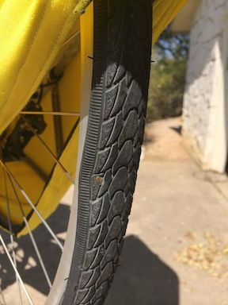
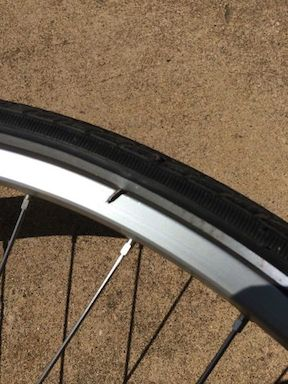
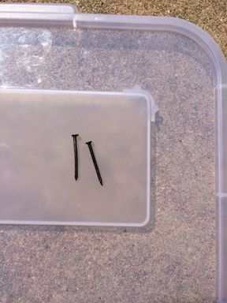
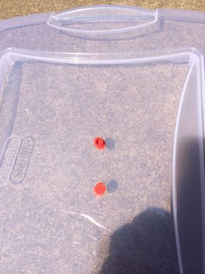

F-40 Two flat tires, two nails
25 Mar 2014
Was out for a nice ride today when 23 miles in - boom - flat rear tire.
While fixing the rear tire, and finding the two nails in it, I decided I also needed to look at the front tire just in case - it was flat also.
|  |  |  |
After I got the tires fixed, back on the bike, the bike put back into the garage, I was cleaning up my area and found these two plugs on the ground.

Bummer, pull the bike back out, take the rear wheel back off and replace the velo plugs with rim tape.
Today I spent more time working on the bike than riding the bike.